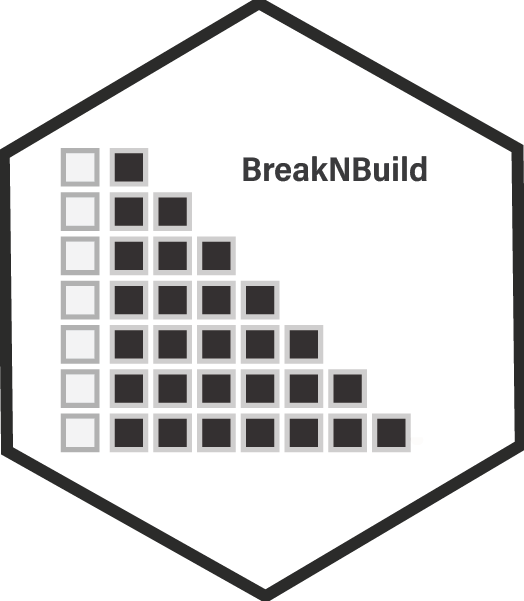
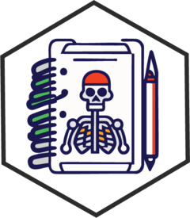
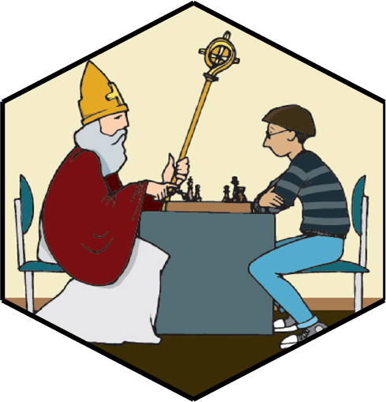
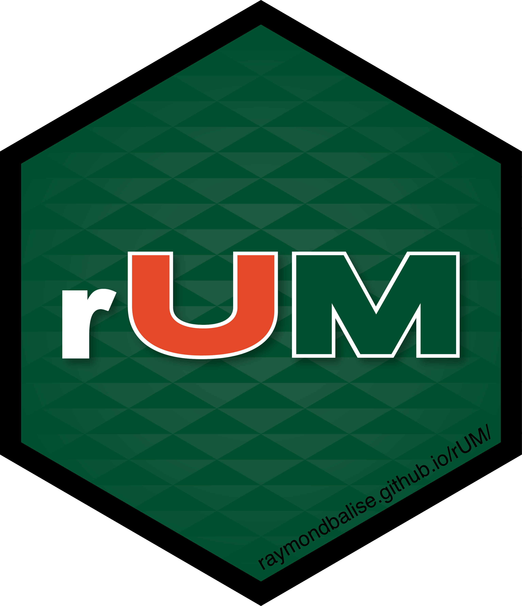
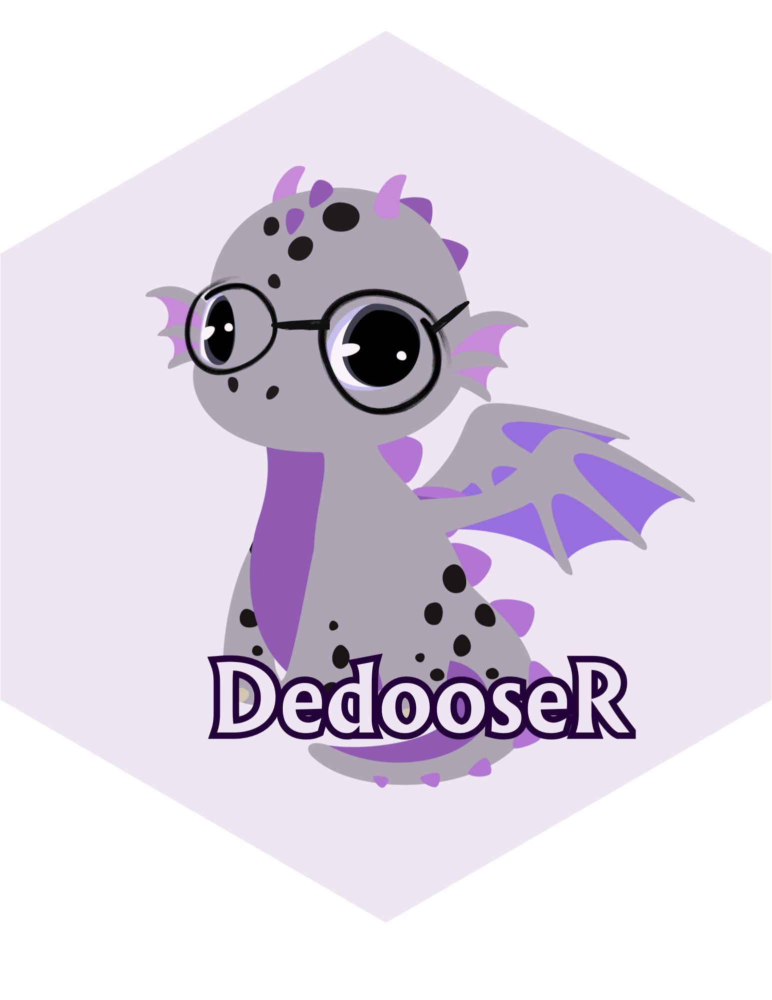

Evaluate model performance with progressively sampled data. Helps assess how models behave as training data grows.

Facilitate dataset documentation during R package creation. Generates roxygen2 skeletons for data objects.
Transform R learning into an entertaining journey by weaving the magic of the wizarding world into R programming.

Three datasets to analyze the performance of 937 players from 188 countries during the 2022 Chess Olympiad in Chennai, India.

R Markdown and Quarto templates for academic papers and slide decks from the University of Miami. Also creates research projects with papers as vignettes.

Streamlines analysis of qualitative data exported from Dedoose. Supports thematic saturation monitoring, code frequencies, dynamic codebooks, and code network maps.
De-identify interview transcripts in VTT, DOCX, and TXT formats. Redacts names and sensitive information with support for batch processing.